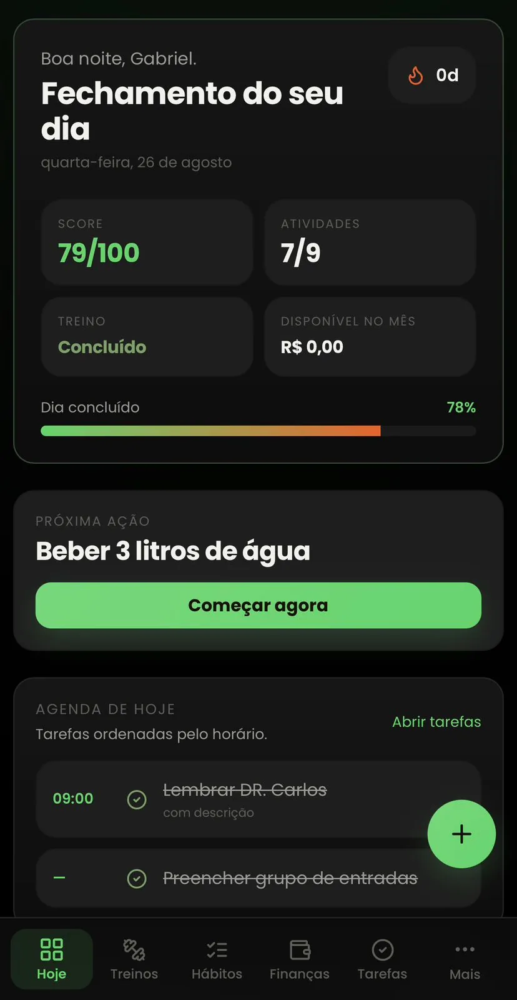

Comece com clareza.
Veja prioridades, hábitos e tarefas antes que o dia decida por você.
Organize hábitos, tarefas, treinos, dieta, finanças e metas em um único app — e transforme cada ação concluída em progresso visível.


Responda três perguntas e descubra qual ponto da sua rotina mais precisa de clareza.
Precisa de um sistema que mostre o que está funcionando, o que ficou para trás e onde continuar.
Insira aqui o seu vídeo final antes de publicar.
Uma lista para tarefas, outra ferramenta para hábitos, uma planilha para treino, anotações para dinheiro e metas que ficam apenas na cabeça.
No fim do dia, você fez várias coisas — mas ainda sente que não avançou.
Escolha uma área e veja como o Constancce transforma ações isoladas em uma rotina que pode ser acompanhada.

Veja prioridades, hábitos e tarefas antes que o dia decida por você.
Marque tarefas e hábitos sem depender da memória no fim do dia.
Tenha seus exercícios, cargas e histórico no mesmo lugar.
Feche o dia com uma visão real do que foi construído.
Conheça o Constancce gratuitamente e, quando fizer sentido para sua rotina, desbloqueie a experiência completa.
Ideal para conhecer a experiência e começar a organizar sua rotina.
Para quem quer transformar o Constancce no painel central da própria evolução.
Constância não precisa ser uma sensação. Pode ser algo que você abre, acompanha e compara.
Você começa a criar ritmo.
Sua rotina já deixa registros.
Os padrões ficam mais claros.
Existe uma história inteira para comparar.
O Constancce registra, lembra, organiza, conecta e mostra. Ele reduz o caos e aumenta a clareza.
Você continua responsável por executar.Sim. O plano BASIC permite conhecer o Constancce gratuitamente usando os recursos essenciais dentro dos limites apresentados na página.
O BASIC é a porta de entrada gratuita. O PRO remove os limites do plano BASIC e libera a experiência completa do Constancce.
Não. Na oferta atual, o Constancce PRO é apresentado como acesso vitalício. As condições completas ficam disponíveis dentro do aplicativo.
Sim. Você pode criar hábitos, tarefas, subtarefas e acompanhar a execução diária dentro do mesmo ambiente.
Sim. O app permite organizar treinos, exercícios, cargas e histórico, além de acompanhar alimentos e informações da rotina alimentar.
Sim. Você pode registrar entradas, despesas, acompanhar o saldo e visualizar as próximas contas.
Sim. Você pode cadastrar metas, acompanhar a conclusão e visualizar sua evolução por meio de histórico, streaks e registros diários.
Não. Você pode ativar apenas os módulos que fazem sentido para sua rotina e construir sua experiência aos poucos.
Não espere a próxima segunda-feira, o próximo mês ou a motivação voltar. Comece registrando o dia que já está acontecendo.
Começar no Constancce Plano BASIC disponível para começar.